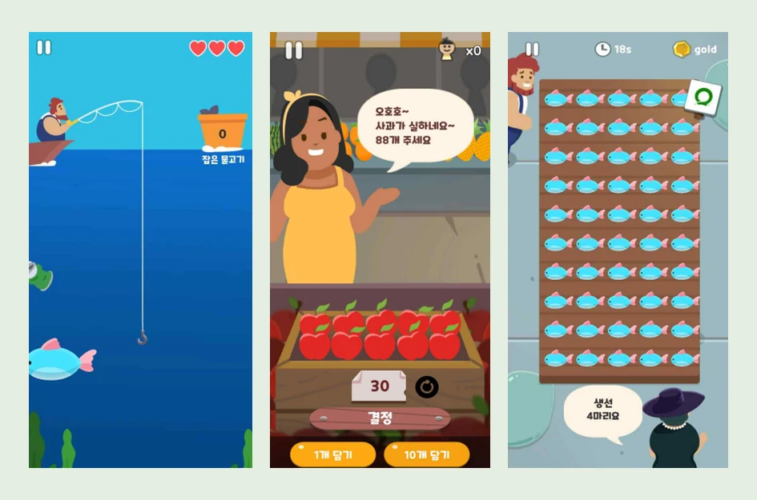

낚시와 시장 놀이 속에서 수학을 만나도록.
현장 교사가 제안한 게임 구성을 받아, 실제로 만들 화면과 규칙, 난이도를 기획했습니다. Unity에서 미니게임 한 종과 캐릭터 선택창을 구현했습니다.
학습 흐름
낚시터에서 물고기를 잡고 시장에서 값을 계산하는 식으로, 놀이마다 다른 수학 개념을 연습하도록 나눴습니다. 게임 목록에는 각 놀이의 그림과 짧은 설명을 함께 배치해 아이가 다음 놀이를 스스로 고를 수 있게 했습니다.
수의 순서
수의 양
덧셈
뺄셈
곱셈과 나눗셈

난이도 설계
1분 동안 손님이 원하는 만큼 사과를 건넵니다. 첫 손님은 1~9개, 이후 손님은 10~29개를 원합니다.
사과를 1개씩 또는 10개씩 옮기는 버튼을 두어 10씩 묶어 세도록 유도했습니다.
점수 10점마다 폭탄이 1개씩 늘고, 폭탄이 많아질수록 물고기 점수도 오릅니다.
점수가 높은 물고기일수록 작고 빠르게 만들었습니다.
난이도는 5단계까지로 제한했습니다.
폭탄이 한 번에 6개 이상 나오면 피할 수 없게 되어 상한을 정했습니다.
기획과 제작
모은 골드로 대장간에서 곡괭이, 도끼, 낚싯대를 강화하고, 미니게임마다 메달을 모으도록 연결했습니다. 원형 게이지가 100%가 되면 다음 메달이 열려, 같은 놀이를 반복해도 나아지는 것이 눈에 보이게 했습니다. 일일 미션은 5종 중 3개가 매일 바뀌어 다시 들어올 이유를 만들었습니다.
동메달→은메달→금메달
미니게임 한 종과 캐릭터 선택창을 Unity 프로토타입으로 제작했습니다. 메인 화면, 학습 모드와 캐릭터 창은 화면 기획서에 전환 순서와 버튼 동작을 정리했습니다.
화면 기획서를 여러 차례 수정하며 미니게임 구성을 다듬었습니다. 초안의 ‘나무 벌목 대결’과 ‘유리 공장’은 수 개념과 더 잘 맞는 ‘사과 따기 대결’과 ‘사과 시장’으로 바꿨습니다.
결과와 배운 점
사용자 테스트 피드백을 받아 캐릭터 선택창(4종)을 추가하고 점수 글씨를 키웠습니다. 캐릭터 꾸미기 요청은 학습이라는 주목적을 흐릴 수 있어 넣지 않았습니다.
큰 물고기의 점수가 낮으면 ‘클수록 많다’는 수 감각과 어긋날 수 있다는 지적에서, 놀이 규칙이 학습 내용과 충돌하지 않는지 따로 살펴야 한다는 것을 배웠습니다.
미니게임 종류가 적어 오래 몰입하기 어려웠고, 피드백도 제한적이어서 학습 효과를 충분히 확인하지 못했습니다. 다음에는 놀이 유형을 늘려 학습이 이어지게 하겠습니다.
효과성 검증 연구 계획서 작성과 피드백 수집에 참여했습니다. 연구는 초등 저학년을 대상으로 게임 학습과 교재 학습을 비교하는 방식으로 계획되었습니다.
2023 한국게임학회 추계 학술발표대회 논문에 공저자로 참여했습니다.